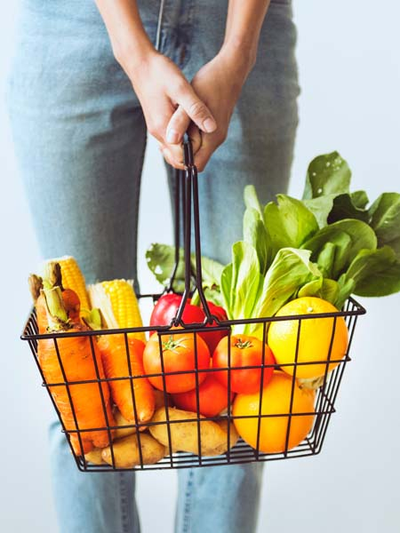
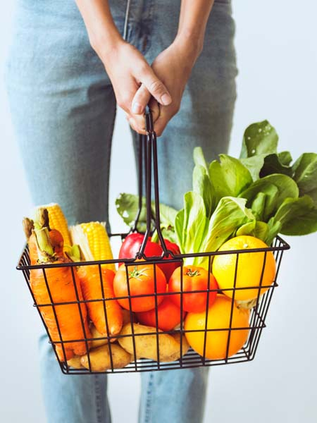

Интернет магазин органических и эко продуктов Organic store
«Organic store» - магазин натуральной и органической продукции. В настоящее время «Organic store» одна из лидирующих компаний, активно развивающих органическое движение в Украине и предоставляющая полный комплекс услуг в сфере органического ритейла – от тщательного выбора только лучших производителей до оперативной доставки свежих органических продуктов к столу конечного потребителя. Наша миссия – улучшение качества жизни и здоровья наших клиентов путем предоставления им самой свежей, самой чистой, самой вкусной и самой качественной еды.